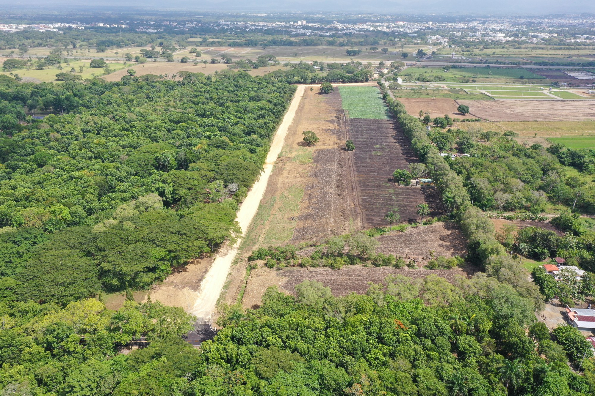
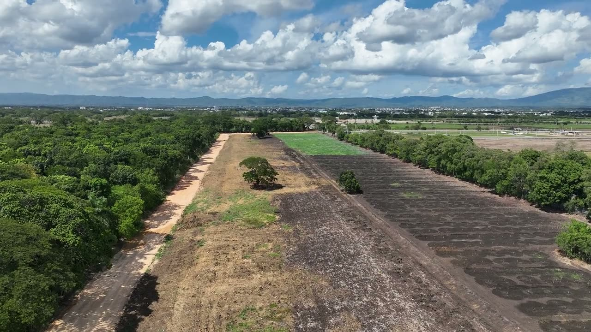
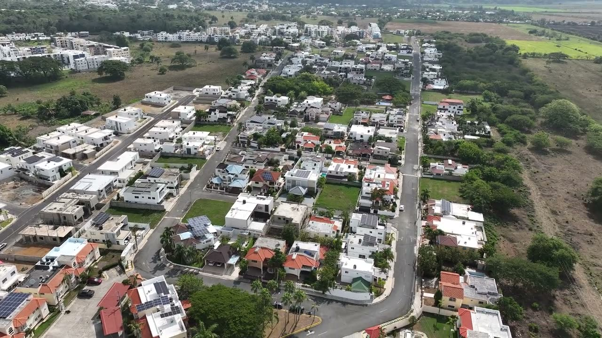
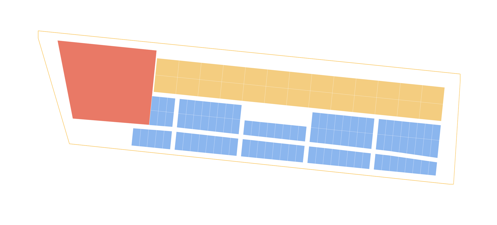

El Pozo
Solares y plaza comercial en San Francisco de Macorís, a menos de 300 m de la Circunvalación.
El proyecto
Qué es El Pozo
145,232 m²de terreno
126solares
21,727 m²para la plaza comercial
Aquí iría la descripción del proyectoQué se va a construir, para quién y en qué etapas.
Maqueta 3D
El proyecto sobre el terreno
Arrastra para girar.
Maqueta de ejemplo
Plano base: © OpenStreetMap · tono: Sentinel-2 cloudless, EOX
Fotos del dron
Cómo está hoy




Plano sobre la ortofoto · norte a la izquierda


Plaza comercialMixtosResidencial
Recorrido 360
Mira alrededor
Solares
Aquí iría la información de los solares
Número, área, precio y disponibilidad de cada solar, con su ficha.
foto o plano
Solar comercial21,727 m² · precio y condicionesfoto o plano
Solares mixtos26 de 1,220 m² · precio y condicionesfoto o plano
Solares residenciales99 de 342 a 455 m² · precio y condicionesUbicación
Cerca de todo
- Circunvalación<300 m
- Parque Duarte10 min
- Supermercados Bravo10 min
Aquí iría el mapaCon la ruta desde la ciudad y los lugares cercanos.
Contacto
Aquí iría el contacto de ventas
Nombre de la persona, teléfono, WhatsApp y horario.
Formulario de contacto